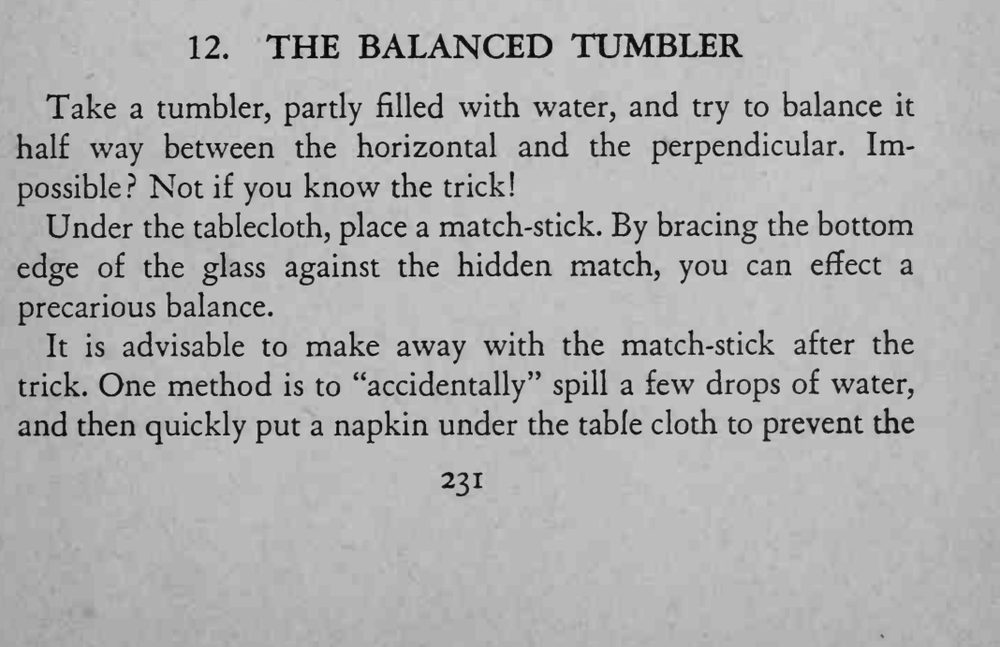
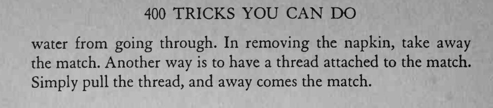

一杯水斜着立在桌面与桌布之间，不会倒下。
火柴藏的位置和杯底抵住的角度要事先试好，取火柴的动作要自然。


Take a tumbler, partly filled with water, and try to balance it half way between the horizontal and the perpendicular. Impossible? Not if you know the trick! Under the tablecloth, place a match-stick. By bracing the bottom edge of the glass against the hidden match, you can effect a precarious balance. It is advisable to make away with the match-stick after the trick. One method is to "accidentally" spill a few drops of water, and then quickly put a napkin under the table cloth to prevent the water from going through. In removing the napkin, take away the match. Another way is to have a thread attached to the match. Simply pull the thread, and away comes the match.